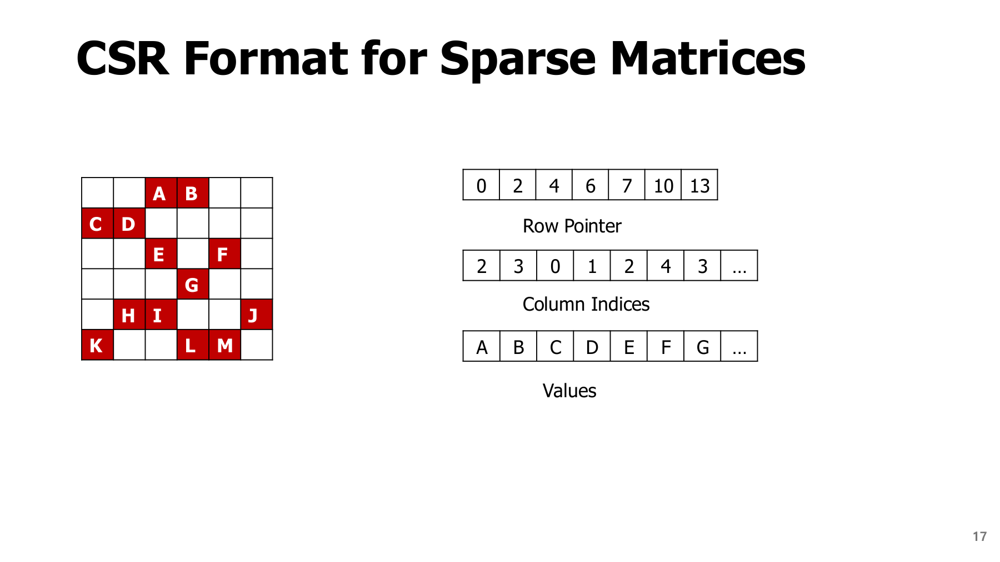
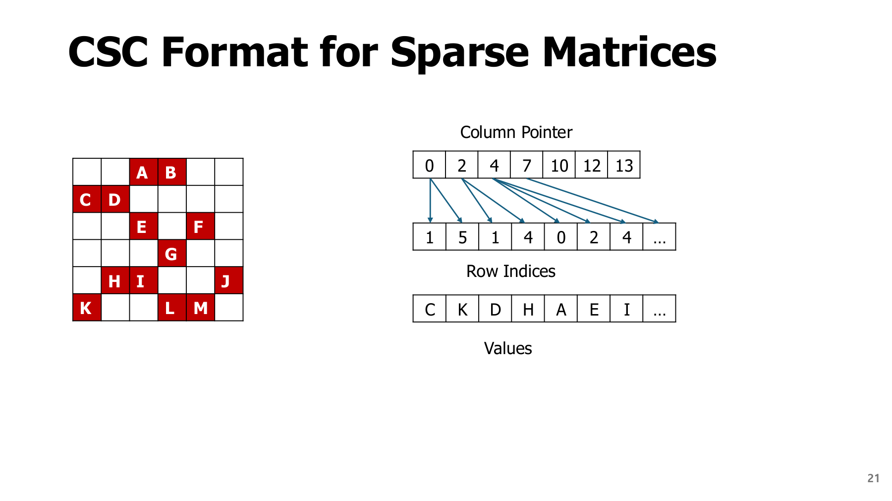
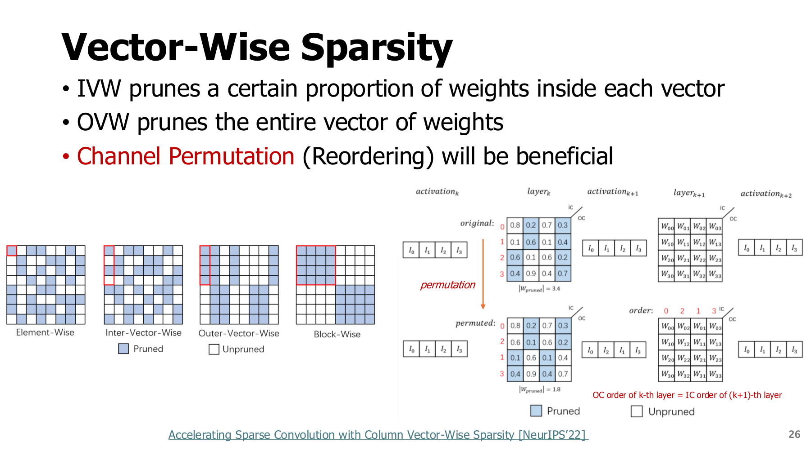
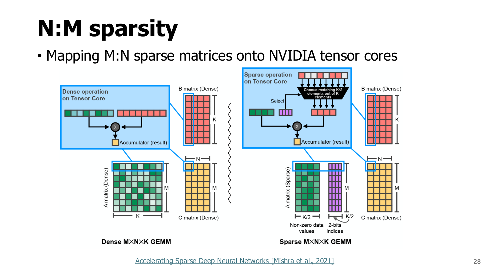

2. 희소 저장과 실행: 0을 만든 뒤 무엇이 더 필요한가?
학습 안내 · 이전 · 다음: LLM 가지치기
원본 범위: p.17-28
학습 목표
- CSR·CSC 배열을 작은 행렬로 직접 만들기
- 0을 없애도 위치 정보가 필요한 이유 설명하기
- 전체 희소성과 N:M의 묶음별 조건 구분하기
시작 전 준비
- Dense(밀집) 저장: 0을 포함한 모든 칸의 값을 저장한다.
- Sparse(희소) 저장: 0이 아닌 값과 그 위치를 저장한다.
- 인덱스(index): 배열의 위치를 나타내는 번호. 이 장은 0부터 센다.
- Byte: 8 bit. FP16 값 하나는 2 byte, 32비트 정수 하나는 4 byte다.
- 행렬·벡터곱: 각 행의 값과 입력을 곱해 더하면 출력 한 개가 된다.
2.1 값과 위치를 따로 저장하기 - p.17-20
0을 포함한 모든 원소를 저장하면 가중치의 숫자만 바뀌고 배열 크기는 그대로다. CSR(Compressed Sparse Row, 압축 희소 행)은 행을 차례대로 보면서 0이 아닌 값만 저장하고 위치를 별도 기록한다.
원문 p.17의 세 배열은 위에서부터 행 경계, 열 위치, 값이다. 행 포인터의 인접한 두 값 사이 구간을 읽어 해당 행의 데이터를 찾는다. p.18-19는 첫 행과 둘째 행을 순서대로 강조한 반복 설명이며, p.20은 그 열 위치로 입력 벡터를 읽는 단계다.


교육용 예제: 원문의 문자 행렬보다 작은 3×4 행렬로 같은 절차를 추적한다. 인덱스는 모두 0부터 시작한다.
A = [[0, 5, 0, 2],
[0, 0, 0, 0],
[7, 0, 3, 0]]
values = [5, 2, 7, 3]
col_idx = [1, 3, 0, 2]
row_ptr = [0, 2, 2, 4]
행 포인터 해석하기
| 행 | 시작·끝 포인터 | 읽을 구간 | 값 개수 |
|---|---|---|---|
| 0번 | 0, 2 | values[0:2] → [5,2] |
2 |
| 1번 | 2, 2 | 빈 구간 | 0 |
| 2번 | 2, 4 | values[2:4] → [7,3] |
2 |
a:b는 a번부터 b번 직전까지의 구간이다.- 마지막 포인터
4: 비영 원소의 전체 개수인 nnz(number of nonzeros). - R개 행의 경계를 표시하려면 포인터는 R+1개 필요하다.
입력 $x=[1,2,3,4]^T$에 대해 $y=Ax$를 계산하면 다음과 같다.
| 출력 | 읽는 값·입력 | 결과 |
|---|---|---|
| $y_0$ | $5x_1+2x_3=5\times2+2\times4$ | 18 |
| $y_1$ | 빈 합 | 0 |
| $y_2$ | $7x_0+3x_2=7\times1+3\times3$ | 16 |
다음은 Python 3 표준 라이브러리만 사용하는 실행 가능한 교육용 코드다. 저장 구조와 수치만 확인하며 최적화된 sparse 커널은 아니다. 빈 행을 허용하고 모양은 rows=3, cols=4로 고정했다.
values = [5, 2, 7, 3]
col_idx = [1, 3, 0, 2]
row_ptr = [0, 2, 2, 4]
x = [1, 2, 3, 4]
y = []
for r in range(len(row_ptr) - 1):
total = 0
for k in range(row_ptr[r], row_ptr[r + 1]):
total += values[k] * x[col_idx[k]]
y.append(total)
assert y == [18, 0, 16]
print(y) # [18, 0, 16]
2.2 CSC는 무엇을 바꿀까? - p.21-22
CSC(Compressed Sparse Column)는 열을 기준으로 모은 압축 형식이다.
같은 3×4 예제를 CSC로 바꾸기
values = [7, 5, 3, 2]
row_idx = [2, 0, 2, 0]
col_ptr = [0, 1, 2, 3, 4]
| 순서 | 읽는 열 | 출력에 더하는 값 |
|---|---|---|
| 1 | 0번 열의 7 | $y_2$에 $7x_0$ |
| 2 | 1번 열의 5 | $y_0$에 $5x_1$ |
| 3 | 2번 열의 3 | $y_2$에 $3x_2$ |
| 4 | 3번 열의 2 | $y_0$에 $2x_3$ |
결과는 CSR과 같은 [18,0,16]이다. 행렬을 바꾸지 않고 저장·방문 순서를 바꾼다.


그림 읽기
Column Pointer: 각 열 데이터의 시작·끝 경계.Row Indices: 남은 값이 원래 있던 행 번호.Values: 0이 아닌 값.- 원문 첫 열은 C·K를 저장한다. CSR의 첫 행 A·B와 시작 묶음이 다름을 확인한다.
아래 비교표는 이 순서 차이가 입력 재사용과 출력 갱신에 미치는 영향을 정리한 것이다.
| 관점 | CSR 방식의 행렬·벡터곱 | CSC 방식의 행렬·벡터곱 |
|---|---|---|
| 모아 놓은 축 | 출력 행 | 입력 열 |
| 자연스러운 계산 | 한 출력 행의 내적 | 한 입력 성분의 여러 출력 기여 |
| 재사용 | 같은 행의 출력을 누산 | 같은 입력 성분을 재사용 |
| 주의 | 입력 성분을 불규칙하게 읽음 | 여러 열이 같은 출력을 갱신해 동기화 필요 |
이는 대표적인 순회 방식이다. 실제 커널은 배치·타일링·캐시·병렬화를 함께 쓰므로 어느 형식이 항상 빠르다고 단정하지 않는다.
2.3 압축이 손해가 되는 조건도 있다 - p.23-25
비영 값 1개마다 위치 정보도 저장해야 한다. $R\times C$ 행렬에서 값은 $b_v$ byte, 인덱스는 $b_i$ byte라고 하자. 단순 CSR 저장량은 다음과 같다.
교육용 계산: 희소 저장이 더 커지는 경우
조건: 위 3×4 행렬, 남은 값 4개, FP16 값 2 byte, 인덱스 4 byte.
| 저장 항목 | 계산 | 용량 |
|---|---|---|
| Dense 값 전체 | $12\times2$ | 24 byte |
| CSR 비영 값 | $4\times2$ | 8 byte |
| CSR 열 인덱스 | $4\times4$ | 16 byte |
| CSR 행 포인터 | $(3+1)\times4$ | 16 byte |
| CSR 합계 | $8+16+16$ | 40 byte |
해석: 2/3가 0이어도 위치 비용 때문에 더 크다. 큰 행렬은 행 포인터의 상대 비용이 작아지지만 개별 인덱스 비용은 남는다.
배열 자체의 관리 정보, 정렬, 실행 중 임시 공간은 제외한 계산이다.
입력의 0을 활용하기 — p.23
| 구성 | 역할 |
|---|---|
| ReLU | 음수를 0으로 바꾸는 함수: $max(0,x)$ |
| Run-length 저장 | 연속된 0의 길이를 기록해 압축 |
| Zero detection | 입력이 0인지 확인해 곱셈을 생략할 후보 탐색 |
| PE gating | 연산 처리 요소(Processing Element)의 불필요한 동작 차단 |
입력에 따라 달라지는 활성값 희소성이다. 학습 후 고정한 가중치의 희소성과 구분한다. 모든 활성화 함수가 ReLU처럼 정확한 0을 만드는 것은 아니다.
가중치의 0을 활용할 때 생기는 비용 — p.24-25
- 위치 해석: 압축된 값이 원래 어디에 있었는지 찾는다.
- 입력 접근: 해당 위치의 활성값을 읽는다.
- 작업 배분: PE마다 계산량이 다르면 먼저 끝난 PE가 기다린다.
| 실행 조건 | 결과 |
|---|---|
| 0이 많지만 dense 커널 사용 | 원래 크기대로 계산할 수 있음 |
| sparse 커널이지만 위치·접근 비용이 큼 | 압축 효과보다 부가 비용이 클 수 있음 |
| 규칙적 패턴과 지원 커널 사용 | 계산 생략의 이득을 얻을 가능성 |
확인할 연결: 희소 패턴 → 저장 형식 → 커널 → 목표 장치의 실측.
2.4 Vector-wise와 채널 재배열 - p.26
원문은 IVW(intra-vector)를 벡터 내부 일부를 제거하는 방식, OVW(원문의 inter-vector 방식)를 벡터 전체를 제거하는 방식으로 비교한다. 행렬을 어떤 축으로 묶었는지 먼저 확인해야 한다. 원소 가지치기와 채널 전체 제거 사이에 벡터·블록 같은 중간 단위를 두어 규칙성과 선택 자유도를 조절한다.


채널 순서를 바꾸어도 출력을 유지하려면?
채널 순열·재배열(Channel Permutation / Reordering)은 채널의 의미를 지우는 것이 아니라 저장·연산 순서를 바꾸는 것이다. 그림 오른쪽은 희소 패턴을 실행하기 좋은 순서로 모으는 아이디어를 보여 준다. 재배열만으로 0의 개수가 늘어나는 것은 아니지만, 벡터·블록 단위로 처리하기 좋은 배치를 찾는 데 도움이 될 수 있다.
- 현재 층의 출력 채널 순서를 바꾼다.
- 다음 층의 입력 채널 순서도 함께 맞춘다.
- 분기 경로와 채널별 상수도 같은 규칙으로 조정한다.
교육용 예제: 현재 층의 출력이 [고양이 특징, 윤곽 특징, 색상 특징] 순서였는데 [색상 특징, 고양이 특징, 윤곽 특징]으로 옮겼다고 하자. 다음 층도 각 특징에 곱할 가중치를 같은 대응으로 옮겨야 원래 계산을 유지한다. 현재 층만 바꾸면 “색상 특징”에 “고양이 특징용 가중치”를 곱하는 오류가 생긴다.
그림의 출력 채널(OC, Output Channel) 순서와 다음 층의 입력 채널(IC, Input Channel) 순서를 맞춘다는 문구가 이 조건이다. 채널별 정규화 파라미터와 분기 연결까지 맞춰야 하며, 실제 이득은 커널이 재배열한 패턴을 활용하는지에 달려 있다.
심화: 순열행렬로 확인
행벡터 표기에서 $h=xW_1$, $y=hW_2$라 하자. 순서를 바꾸는 행렬 $P$에 대해
위와 같이 바꾸면 $h'W_2'=hPP^TW_2=hW_2=y$다. $P^T$는 순서를 되돌리는 역할을 한다. 모든 구조에서 임의의 재배열이 가능한 것은 아니다.
2.5 N:M 패턴과 실제 커널 - p.27-28
N:M 희소성: 지정된 M개 묶음마다 남길 개수 또는 제거할 개수를 제한한다.
표기 주의
- 원문 p.27: N을 제거하는 개수로 사용한다.
- 다른 문헌·커널 문서: N을 유지하는 개수로 쓰기도 한다.
- 2:4: 두 관례 모두 4개 중 2개 유지·2개 제거, 밀도 50%다.
N과 M만 외우기보다 해당 문서의 “몇 개 유지” 조건을 확인한다.
예를 들어 [3,0,-2,0]은 4개 중 2개가 비영이라 2:4 유지 패턴에 맞는다. [3,1,-2,0]은 3개가 남아 맞지 않는다. 전체 50% 희소성만으로는 충분하지 않으며 모든 지정 묶음에서 조건을 지켜야 한다.


그림은 0을 없앤 값만 보내는 것이 아니라 남은 위치 metadata도 커널에 전달한다는 점을 본다. 원문의 Ampere 예시는 특정 구조적 희소 행렬곱 경로를 가리킨다. 실제 사용에는 dtype, 행렬 크기, 축, 정렬, 라이브러리·장치 지원을 확인해야 한다. 이 자료에서는 현재 장치의 지원 여부나 end-to-end 가속률을 실측하지 않았다.
2.6 요약과 확인 질문
CSR·CSC는 같은 행렬의 저장·순회 방식을 바꾼다. N:M은 저장 형식과 별도로 어떤 위치 패턴을 허용할지 제한한다. 다음 장에서는 이런 패턴을 만들 때 중요한 정보를 덜 잃는 점수와 보상 방법을 배운다.
row_ptr=[0,2,2,4]에서 두 번째 행의 값 개수는?- FP16 값 1000개만 남겼고 인덱스가 32비트라면 값·개별 인덱스 합계는 몇 byte인가? 행 포인터는 제외한다.
- 4개씩 두 묶음에서 각각 비영 원소가 3개와 1개라면 전체 밀도는 50%다. 2:4인가?
해설과 돌아갈 위치
- $2-2=0$개다. 포인터 값은 행 번호가 아니라 values 배열의 경계다. 2.1을 확인한다.
- $1000\times(2+4)=6000$ byte다. 값 본체만 보면 2000 byte지만 위치 비용이 더해진다. 2.3을 확인한다.
- 아니다. 각 묶음이 각각 2개 유지여야 한다. 2.5의 지역 제약을 확인한다.